Slides built 2026-11-24, fifth round (other motions, P7). Rounds 1 to 5 are checked, with caveats (checks 1 to 6 in checks/T8.md); every MPM force of rounds 1 to 3 was recorded at one phase of a 20 ms cycle and is superseded by P6. The record is outputs/T8.md.
Recorded correctly, the MPM drag force is not below DEM material A: -87 N at task settings against -79 N (ratio 1.09), and -95 N with the tuned grid at 1 cm against -71 N (1.34); against DEM B the tuned ratio is 0.96, and the tuned force still falls with the voxel.
| At 6 cm below the common surface, drag distance 0.5 to 1.0 m | MPM, constant speed, all physics steps (round 4) | MPM as recorded before (one phase) | DEM A, 15 mm grains | MPM / DEM A |
|---|---|---|---|---|
| Task settings, voxel 3 cm (4 alignments); DEM at 733 kg/m3 (3 seeds) [N] | -86.7 | -34.3 (stiff gantry), -58.3 (T1 gantry) | -79.4 | 1.09 |
| Tuned MPM, voxel 2 cm (4 alignments); DEM at 640 kg/m3 (3 seeds) [N] | -123.1 | -55.6 | -71.1 | 1.73 |
| Tuned MPM, voxel 1 cm (4 alignments); DEM at 640 kg/m3 [N] | -94.9 | -45.1 | -71.1 | 1.34 |
| Trench / side berm, tuned MPM 1 cm, constant speed [cm] | 5.7 / 2.8 | 5.6 / 2.9 | 6.1 / 2.4 | |
| Trench / side berm, task settings, stiff gantry, constant speed [cm] | 8.0 / -0.3 | 8.0 / -0.2 (T1 gantry) | 6.0 / 2.6 |
| Value | |
|---|---|
| Box | 0.2 x 0.2 x 0.1 m, held level. MPM: 10 kg body on a PD gantry. Rounds 1 and 2 (P1 to P4, Resolution, Checks): the T1 gantry, stiffness 1e5 N/m, damping 4e3 N s/m. Round 3 (P5 and the stiff-gantry task-setting runs): 3e6 N/m, 1.2e5 N s/m. DEM: prescribed motion (kinematic). |
| Path | Hover with the box centre 0.15 m above the surface; lower; hold; drag in +x at 0.5 m/s; hold 0.5 s. Rounds 1 and 2: lower at 0.5 m/s, hold 0.5 s, drag 1.4 m. Round 3: lower at 0.2 m/s, hold 1.5 s, drag 1.0 m (1.4 m on the full bed). |
| Depth | Box underside 6 cm below the mass-equivalent surface, measured in each run before lowering by the same code in both simulators: cumulative mass of particle centres in the strip along the drag, extrapolated to zero with the bulk density just below the surface. |
| Bed | Rounds 1 and 2: 2.4 x 1.2 m, rigid floor and walls; 159 (MPM) and 160 (DEM) kg of sand per m2, thickness 0.217 and 0.218 m by mass per area over density. Round 3: 2.0 x 0.8 x 0.25 m with walls 0.5 m high for the voxel series, 2.4 x 1.2 m for the deformation comparison at 1 cm. |
| Sand | Rounds 1 and 2: MPM preset poppy_seed_loose at the task's discretization (voxel 3 cm, 1.25 particles per cell edge, jitter 5 cm, step 5 ms, 25 iterations); DEM material A at 733 kg/m3, calibrated to it (P1). Round 3: the same preset with 8 particles per cell placed at random in their sub-cells, time step voxel / (6 m/s) (5 ms at 4 cm), 250 iterations, tolerance 1e-4; DEM material A at 640 kg/m3. |
| Recorded | Force of the sand on the box every 0.02 s; all particle positions and velocities before lowering, every 0.2 m of drag, and at the end. Steady force: mean over drag distance 0.5 to 1.4 m (rounds 1 and 2) or 0.5 to 1.0 m (round 3). |
| Which MPM test | The T1 box probe (prescribed path). The T3 cube test (15 kg cube free to sink) is not reproduced: its depth is an outcome, not an input. |
DEM matches the settled MPM sand in density (731 and 733 kg/m3) and mass per area; the sliding angle matches only by the 1 cm/s rule, because MPM creeps and DEM does not.
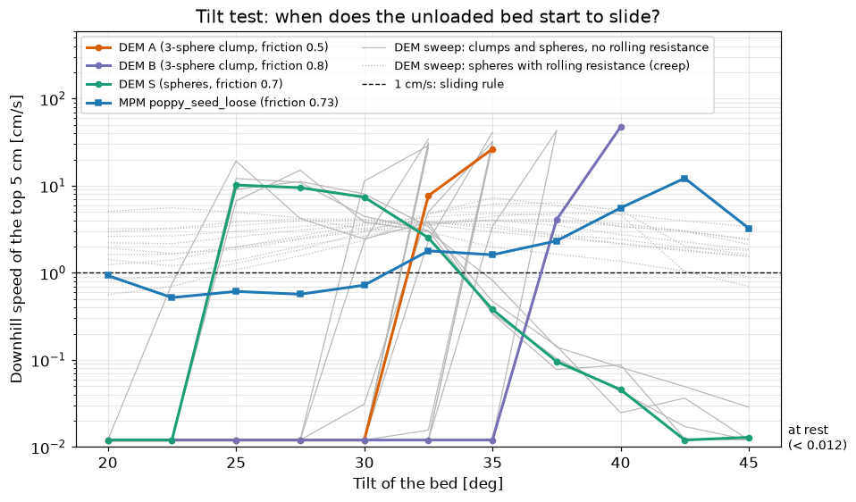
analysis/tilt.py in ~/isaac/dem_compare (commit 0b91ec5). Raw data: OSMO outputs under swift://pdx.s8k.io/AUTH_team-isaac-sqa/isaac-sqa/jkamohara/t8-dem/runs/<workflow>/, workflows t8-mpm-drag-1, t8-dem-final2-1, t8-dem-tilt-shape-1, t8-dem-tilt-r8-1; small files also in results/raw/. MPM code: stack archive t3-eval/bundles/8f6c08a6db49bad7 (IsaacLab a60612c79 with 69 uncommitted files, Newton e681453d with 1, Warp 3d0f4e5b). DEM-Engine: pyDEME 3.1.0. One L40S GPU per run.| Measured the same way in both (drag bed, before lowering) | MPM, voxel 3 cm | DEM A, 15 mm |
|---|---|---|
| Bulk density just below the surface [kg/m3] | 731 | 733 |
| Sand mass per area [kg/m2] | 158.6 | 159.8 |
| Bed thickness, mass per area over density [m] | 0.217 | 0.218 |
| First tilt step above 0.5 / 1 / 2 / 5 cm/s [deg] | 20 / 32.5 / 37.5 / 40 | 32.5 / 32.5 / 32.5 / 32.5 (second seed: 35 at 5 cm/s) |
| Particle spacing as generated / grain size [mm] | 23.6 | 15 |
| Parameter | MPM | DEM (material A) |
|---|---|---|
| Model | Continuum, implicit MPM (Newton), APIC transfer, yield with a friction coefficient | Discrete grains, DEM-Engine 3.1.0, Hertz-Mindlin contact with Coulomb friction (history based) |
| Bulk density | 640 kg/m3 as generated; 731 kg/m3 just below the surface after settling | 733 kg/m3 after settling (grain solid density 1196 kg/m3, solid fraction 0.62) |
| Friction | Internal friction coefficient 0.73 (36.1 deg) | Grain-grain friction 0.5; bulk friction from shape |
| Cohesion | None (yield stress 0, tensile yield ratio 0) | None |
| Stiffness | Young's modulus 1e15 Pa, yield pressure 1e15 Pa (effectively rigid) | Young's modulus 5e7 Pa, Poisson ratio 0.3 |
| Dilatancy, hardening, viscosity | 0, 0, 0 | Not parameters; dilation comes from the grains |
| Restitution, rolling resistance | Not parameters | 0.2, 0 (off) |
| Resolution | Voxel 3 cm; 1.25 particles per cell edge (about 2 per voxel); particle spacing 23.6 mm as generated; jitter 5 cm; 55,000 particles | Three overlapping spheres of radius 6 mm (five sizes, +-10%) on a triangle 3 mm from the centre; volume-equivalent diameter 15 mm; 200,704 grains |
| Box-sand friction, margin | 1.0, contact margin 0 (printed from the solver in every run) | 1.0 |
| Floor and wall friction | 0.8; walls 0.2 m high (scene value) | 0.8; walls higher than the bed |
| Time step | 5 ms, iteration cap 25, tolerance 1e-4 (printed by the driver from the run's configuration) | 21.5 us (0.15 of the Rayleigh step) |
| Bed preparation | Particles generated in place, 2 s of settling while the box hovers | Grains released from a dilute jittered lattice with random velocities up to 0.3 m/s, 2 s of settling |
| Cost of one drag | 20 ms of computing per 20 ms step on an L40S | 13 min on an L40S, including 85 s of kernel compilation |
Not matched: the tilt curve (MPM creeps from 20 deg, DEM is at rest until it avalanches); the grain size (DEM grains are 15 mm across, MPM particle spacing 23.6 mm); the stiffness; the box model (dynamic on a gantry in MPM, kinematic in DEM); the flatness of the bed (the MPM surface is 1.4 cm lower at the side walls). Matched by one rule in both: bulk density (731 and 733 kg/m3), mass per area (158.6 and 159.8 kg/m2), thickness (0.217 and 0.218 m), depth of the box.
Task settings, T1 gantry: MPM digs a deeper trench (8.0 against 6.0 cm) and raises nothing beside it; DEM builds side berms of 2.6 cm.
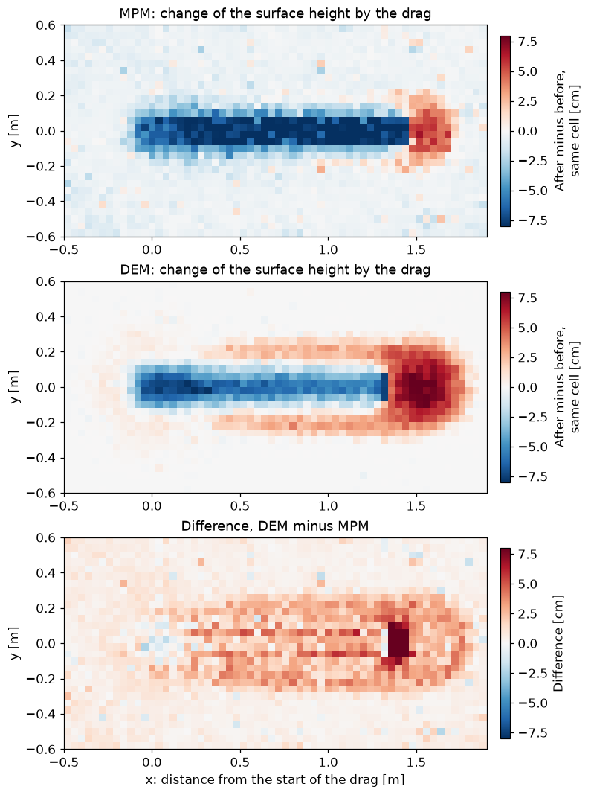
analysis/compare.py in ~/isaac/dem_compare (commit 0b91ec5). Raw data: OSMO outputs under swift://pdx.s8k.io/AUTH_team-isaac-sqa/isaac-sqa/jkamohara/t8-dem/runs/<workflow>/, workflows t8-mpm-eq-1 (task v03-d06), t8-dem-eq-1 (task A-r60-d06); small files also in results/raw/. MPM code: stack archive t3-eval/bundles/8f6c08a6db49bad7 (IsaacLab a60612c79 with 69 uncommitted files, Newton e681453d with 1, Warp 3d0f4e5b). DEM-Engine: pyDEME 3.1.0. One L40S GPU per run.MPM loses volume when sheared (surface 0.4 cm lower even far from the trench); DEM gains volume. The MPM bed is not flat before the drag.
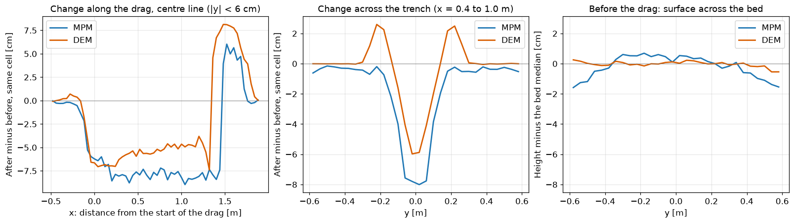
| After the drag minus before lowering, same cell (one run each) | MPM | DEM |
|---|---|---|
| Trench depth [cm] | 8.0 | 6.0 |
| Highest rise beside the trench [cm] | -0.2 | 2.6 |
| Change far from the trench (|y| > 0.4 m) [cm] | -0.37 | -0.01 |
| Pile ahead of the box [cm] | 6.0 | 8.1 |
| Volume of cells that fell more than 0.5 cm [L] | 31.3 | 15.2 |
| Volume of cells that rose more than 0.5 cm [L] | 4.7 | 17.7 |
| Before the drag: surface at the side walls below the bed median [cm] | 1.4 | 0.2 |
Task settings, T1 gantry: the moving wedge has the same reach (22 and 22 cm ahead of the front face) and a similar shape; it is narrower in MPM (half-width 18 to 19 cm against 21 to 24 cm). One run each.
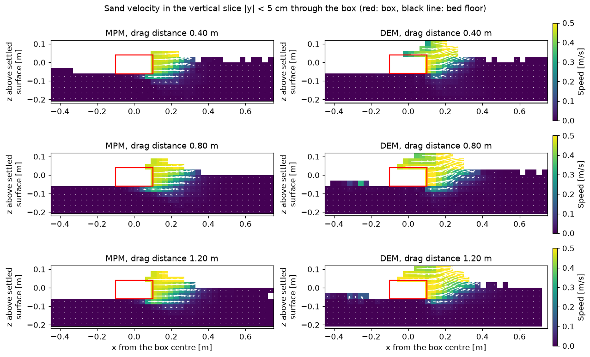
analysis/compare.py in ~/isaac/dem_compare (commit 0b91ec5). Raw data: OSMO outputs under swift://pdx.s8k.io/AUTH_team-isaac-sqa/isaac-sqa/jkamohara/t8-dem/runs/<workflow>/, workflows t8-mpm-eq-1 (task v03-d06), t8-dem-eq-1 (task A-r60-d06); small files also in results/raw/. MPM code: stack archive t3-eval/bundles/8f6c08a6db49bad7 (IsaacLab a60612c79 with 69 uncommitted files, Newton e681453d with 1, Warp 3d0f4e5b). DEM-Engine: pyDEME 3.1.0. One L40S GPU per run.Just below the box underside the MPM sand moves faster (0.55 against 0.33 of the box speed at 7.5 cm depth).
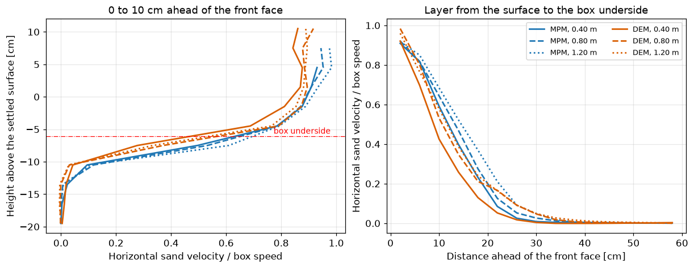
| Drag distance [m] | Moving mass MPM [kg] | DEM [kg] | Depth of motion MPM [cm] | DEM [cm] | Reach ahead of box centre MPM [cm] | DEM [cm] | RMS velocity difference in the slice [m/s] |
|---|---|---|---|---|---|---|---|
| 0.40 | 8.7 | 8.8 | 10.5 | 10.7 | 31 | 32 | 0.10 |
| 0.80 | 11.6 | 12.1 | 10.5 | 10.5 | 32 | 36 | 0.10 |
| 1.20 | 12.8 | 13.7 | 9.9 | 10.4 | 34 | 37 | 0.12 |
MPM forces in this section were recorded at one phase of a 20 ms cycle of the box speed and are superseded by P6. DEM forces, deformation, sand motion, density and the tilt test are not affected.
Superseded by P6 (MPM force recorded at one phase): T1 gantry (compliantly held box), equal depth: -59.4 N in MPM (4 beds, one grid alignment) and -81.3 N in DEM with 15 mm grains (3 seeds), ratio 1.37 (1.42 after a longer drag, one run each). On a stiff gantry, the intended test, MPM gives -34 N and the ratio is 2.3 (P5).
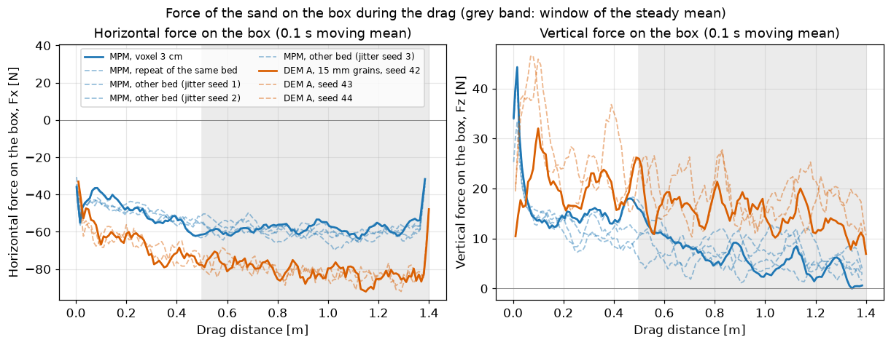
analysis/compare.py in ~/isaac/dem_compare (commit 0b91ec5). Raw data: OSMO outputs under swift://pdx.s8k.io/AUTH_team-isaac-sqa/isaac-sqa/jkamohara/t8-dem/runs/<workflow>/, workflows t8-mpm-eq-1, t8-dem-eq-1; small files also in results/raw/. MPM code: stack archive t3-eval/bundles/8f6c08a6db49bad7 (IsaacLab a60612c79 with 69 uncommitted files, Newton e681453d with 1, Warp 3d0f4e5b). DEM-Engine: pyDEME 3.1.0. One L40S GPU per run.| Steady force, drag distance 0.5 to 1.4 m | Fx mean [N] | Fx by thirds of the window [N] | Fz mean [N] | Fz when the drag starts [N] |
|---|---|---|---|---|
| MPM, voxel 3 cm | -58.2 | -59.1 / -57.6 / -58.0 | 6.1 | 222 |
| MPM, repeat of the same bed | -59.0 | -59.1 / -59.1 / -58.9 | 7.7 | 221 |
| MPM, other bed (jitter seed 1) | -61.3 | -59.4 / -63.7 / -60.9 | 8.6 | 202 |
| MPM, other bed (jitter seed 2) | -59.4 | -57.8 / -59.7 / -60.8 | 5.3 | 230 |
| MPM, other bed (jitter seed 3) | -58.8 | -55.9 / -60.5 / -60.0 | 6.5 | 172 |
| DEM A, 15 mm grains, seed 42 | -81.1 | -77.0 / -80.9 / -85.3 | 14.8 | 2 |
| DEM A, seed 43 | -81.5 | -76.6 / -84.1 / -83.9 | 17.1 | 5 |
| DEM A, seed 44 | -81.3 | -78.1 / -82.0 / -83.7 | 18.7 | 4 |
Superseded by P6 (MPM force recorded at one phase): Against depth by the common rule, DEM lies above MPM at every depth and voxel size run; MPM rises in steps. One run per point.
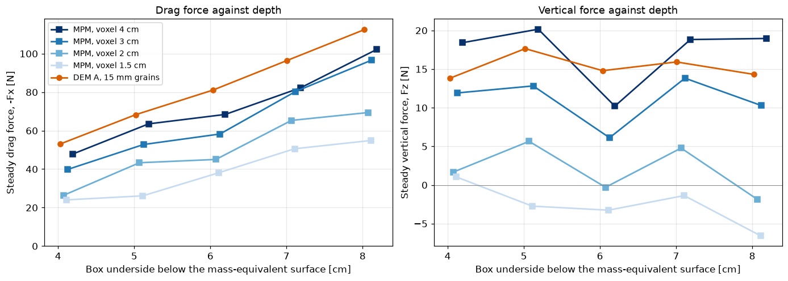
analysis/depth.py in ~/isaac/dem_compare (commit 0b91ec5). Raw data: OSMO outputs under swift://pdx.s8k.io/AUTH_team-isaac-sqa/isaac-sqa/jkamohara/t8-dem/runs/<workflow>/, workflows t8-mpm-eq-1, t8-dem-eq-1; small files also in results/raw/. MPM code: stack archive t3-eval/bundles/8f6c08a6db49bad7 (IsaacLab a60612c79 with 69 uncommitted files, Newton e681453d with 1, Warp 3d0f4e5b). DEM-Engine: pyDEME 3.1.0. One L40S GPU per run.MPM forces in this section were recorded at one phase of a 20 ms cycle of the box speed and are superseded by P6. DEM forces, deformation, sand motion, density and the tilt test are not affected.
Superseded by P6 (MPM force recorded at one phase): Tuned MPM falls from -84 N at 4 cm to -45 N at 1 cm and about -42 N at 0.75 cm (three single runs, two alignments) and has not converged; DEM A at the same density gives -71 N.
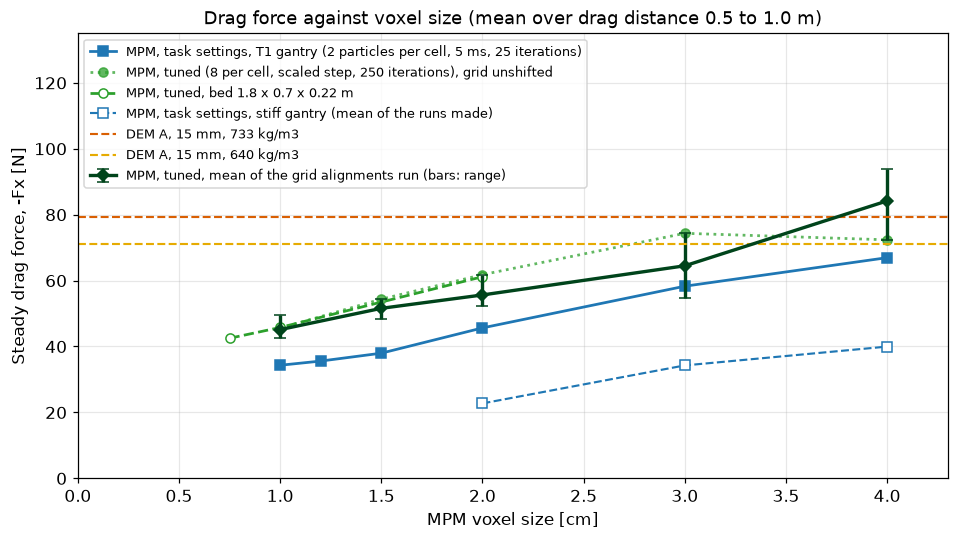
analysis/round3.py (run in OSMO workflow t8-ana-*) in ~/isaac/dem_compare (commit 0b91ec5). Raw data: OSMO outputs under swift://pdx.s8k.io/AUTH_team-isaac-sqa/isaac-sqa/jkamohara/t8-dem/runs/<workflow>/, workflows t8-mpm-r3-main-1, t8-mpm-r3-aligns-1, t8-mpm-r3-setup-1, t8-mpm-r3-gantry-1, t8-mpm-r3-ladder-1, t8-mpm-r3-tilt-1, t8-dem-r3b-1, t8-mpm-eq-1, t8-dem-eq-1; small files also in results/raw/. MPM code: stack archive t3-eval/bundles/8f6c08a6db49bad7 (IsaacLab a60612c79 with 69 uncommitted files, Newton e681453d with 1, Warp 3d0f4e5b). DEM-Engine: pyDEME 3.1.0. One L40S GPU per run.| Same depth, window 0.5 to 1.0 m | MPM task settings, T1 gantry (compliant) | MPM task settings, stiff gantry (intended test) | MPM tuned, 2 cm | MPM tuned, 1 cm | DEM A, 733 kg/m3 | DEM A, 640 kg/m3 |
|---|---|---|---|---|---|---|
| Drag force Fx [N] | -58.3 (voxel 3 cm, 1 run) | -34.3 (voxel 3 cm, 4 runs) | -55.6 (4 runs) | -45.1 (4 runs) | -79.4 (3 seeds) | -71.1 (3 seeds) |
| DEM / MPM | 1.36 | 2.32 | 1.28 | 1.58 | ||
| Bed density after settling [kg/m3] | 731 | 640 | 640 | 733 | 640 | |
| First tilt step above 1 cm/s [deg] | 32.5 (creeps from 20) | 40.0 | 40.0 | 32.5 | not run | |
| Trench / side berm [cm] | 8.0 / -0.2 | 5.6 / 2.9 | 6.0 / 2.6 | 6.1 / 2.4 | ||
| Bed sinks far from the trench [cm] | 0.4 | 0.0 | 0.0 | 0.0 | ||
| Sand moving faster than 0.05 m/s [kg] | 11.0 | 6.9 | 11.5 | 10.0 |
Trench, berms and pile of tuned MPM match DEM within about 0.5 cm (trench 5.6 against 6.1 cm, berm 2.9 against 2.4 cm); neither bed sinks. One run each.
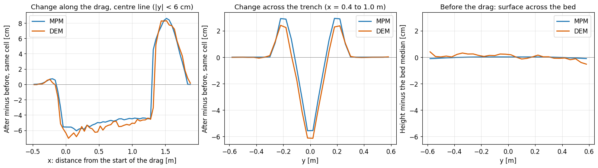
analysis/compare.py (run in OSMO workflow t8-ana-*) in ~/isaac/dem_compare (commit 0b91ec5). Raw data: OSMO outputs under swift://pdx.s8k.io/AUTH_team-isaac-sqa/isaac-sqa/jkamohara/t8-dem/runs/<workflow>/, workflows t8-mpm-r3-main-1 (task v10-full), t8-dem-r3b-1 (task A640-r60); small files also in results/raw/. MPM code: stack archive t3-eval/bundles/8f6c08a6db49bad7 (IsaacLab a60612c79 with 69 uncommitted files, Newton e681453d with 1, Warp 3d0f4e5b). DEM-Engine: pyDEME 3.1.0. One L40S GPU per run.Superseded by P6 (MPM force recorded at one phase): On the full bed at 1 cm: -45.6 N in tuned MPM against -71.7 N in DEM A at 640 kg/m3 (three seeds); both are steady in the window.
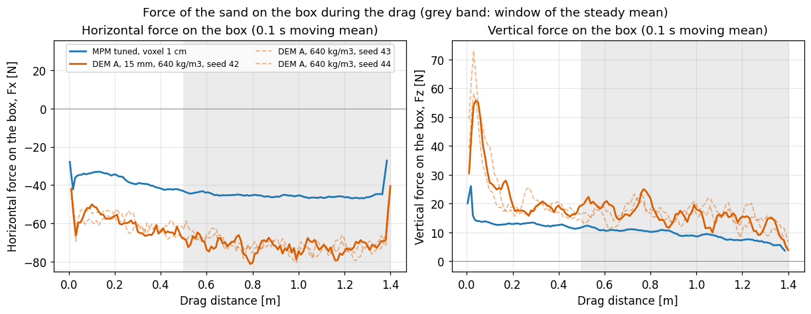
Superseded by P6 (MPM force recorded at one phase): The force is the same for gantries of 1e6 N/m and stiffer and up to 1.6 times higher on softer ones (1.9 times at task settings, with the box at depth); the cause is not identified. One run per point.
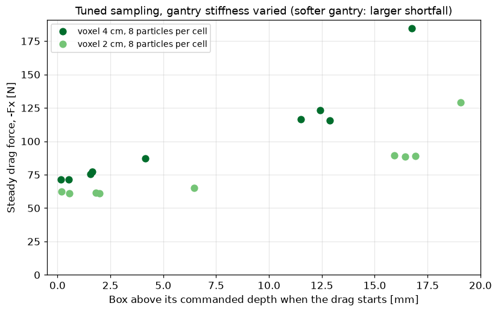
analysis/round3.py (run in OSMO workflow t8-ana-*) in ~/isaac/dem_compare (commit 0b91ec5). Raw data: OSMO outputs under swift://pdx.s8k.io/AUTH_team-isaac-sqa/isaac-sqa/jkamohara/t8-dem/runs/<workflow>/, workflows t8-mpm-r3-main-1, t8-mpm-r3-aligns-1, t8-mpm-r3-setup-1, t8-mpm-r3-gantry-1, t8-mpm-r3-ladder-1, t8-mpm-r3-tilt-1, t8-dem-r3b-1, t8-mpm-eq-1, t8-dem-eq-1; small files also in results/raw/. MPM code: stack archive t3-eval/bundles/8f6c08a6db49bad7 (IsaacLab a60612c79 with 69 uncommitted files, Newton e681453d with 1, Warp 3d0f4e5b). DEM-Engine: pyDEME 3.1.0. One L40S GPU per run.Superseded by P6 (MPM force recorded at one phase): At 1 cm, 250 iterations are enough (1000: +2%) and halving the time step changes the force by +5%; 25 iterations or twice the step lose 24% and 17%. One run per bar.
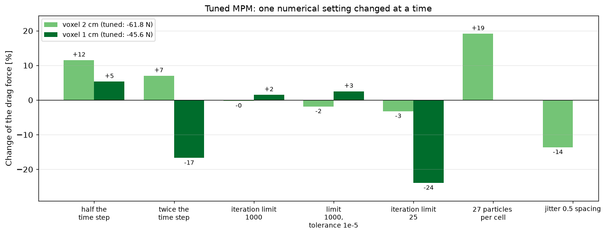
analysis/round3.py (run in OSMO workflow t8-ana-*) in ~/isaac/dem_compare (commit 0b91ec5). Raw data: OSMO outputs under swift://pdx.s8k.io/AUTH_team-isaac-sqa/isaac-sqa/jkamohara/t8-dem/runs/<workflow>/, workflows t8-mpm-r3-main-1, t8-mpm-r3-aligns-1, t8-mpm-r3-setup-1, t8-mpm-r3-gantry-1, t8-mpm-r3-ladder-1, t8-mpm-r3-tilt-1, t8-dem-r3b-1, t8-mpm-eq-1, t8-dem-eq-1; small files also in results/raw/. MPM code: stack archive t3-eval/bundles/8f6c08a6db49bad7 (IsaacLab a60612c79 with 69 uncommitted files, Newton e681453d with 1, Warp 3d0f4e5b). DEM-Engine: pyDEME 3.1.0. One L40S GPU per run.Tuned MPM sand does not creep and slides at 40 deg at every voxel size run, above the preset's 36 deg and DEM A's 32.5 deg. One run each.
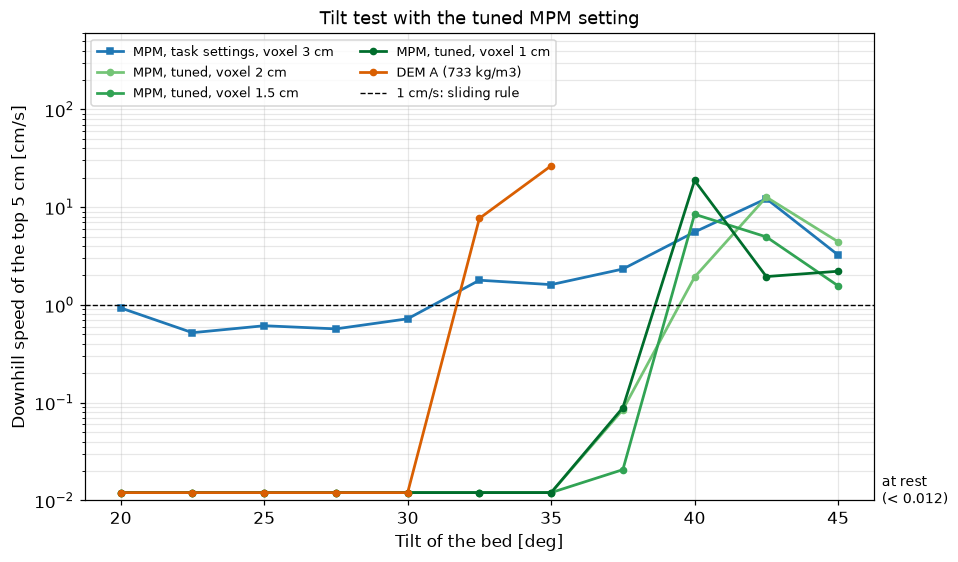
analysis/round3.py (run in OSMO workflow t8-ana-*) in ~/isaac/dem_compare (commit 0b91ec5). Raw data: OSMO outputs under swift://pdx.s8k.io/AUTH_team-isaac-sqa/isaac-sqa/jkamohara/t8-dem/runs/<workflow>/, workflows t8-mpm-r3-main-1, t8-mpm-r3-aligns-1, t8-mpm-r3-setup-1, t8-mpm-r3-gantry-1, t8-mpm-r3-ladder-1, t8-mpm-r3-tilt-1, t8-dem-r3b-1, t8-mpm-eq-1, t8-dem-eq-1; small files also in results/raw/. MPM code: stack archive t3-eval/bundles/8f6c08a6db49bad7 (IsaacLab a60612c79 with 69 uncommitted files, Newton e681453d with 1, Warp 3d0f4e5b). DEM-Engine: pyDEME 3.1.0. One L40S GPU per run.When the gantry target jumps once per 20 ms the box speed swings between 0.58 and 0.40 m/s and the probe records the weakest step: -31 N recorded, -84 N over all steps, -83 N at constant speed (task settings, stiff gantry). One run each.
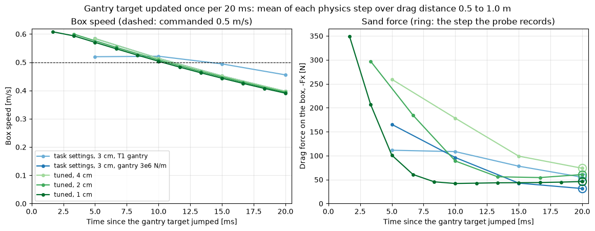
analysis/round4.py in ~/isaac/dem_compare (commit 0b91ec5). Raw data: OSMO outputs under swift://pdx.s8k.io/AUTH_team-isaac-sqa/isaac-sqa/jkamohara/t8-dem/runs/<workflow>/, workflows t8-mpm-r4-test-1, t8-mpm-r4-main-1; DEM values from t8-dem-eq-1, t8-dem-r3b-1; small files also in results/raw/. MPM code: stack archive t3-eval/bundles/8f6c08a6db49bad7 (IsaacLab a60612c79 with 69 uncommitted files, Newton e681453d with 1, Warp 3d0f4e5b). DEM-Engine: pyDEME 3.1.0. One L40S GPU per run.| Drag force Fx [N], one run each | Physics steps per target jump | Step the probe records | Mean over all physics steps | Target moved every physics step (constant speed) |
|---|---|---|---|---|
| Task settings, 3 cm, gantry 3e6 N/m | 4 | -31.4 | -83.9 | -83.4 |
| Task settings, 3 cm, T1 gantry (1e5 N/m) | 4 | -55.0 | -88.3 | -89.7 |
| Tuned, 4 cm | 4 | -73.8 | -152.6 | -153.6 |
| Tuned, 2 cm | 6 | -60.7 | -123.6 | -131.4 |
| Tuned, 1 cm | 12 | -46.1 | -89.1 | -95.3 |
At constant speed MPM gives -87 N at task settings (DEM A -79 N) and -168 to -95 N with the tuned grid from 4 to 1 cm; that is above DEM A (-71 N) at every voxel size and crosses DEM B (-99 N, one run) near 1 cm, still falling.
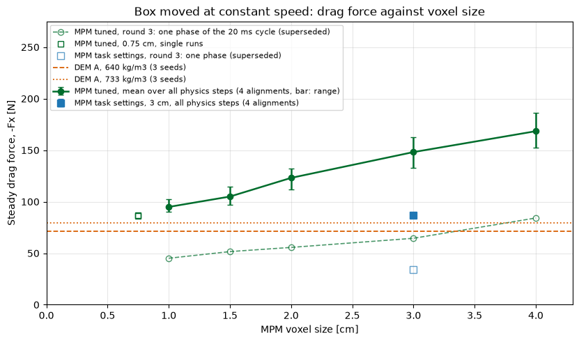
analysis/round4.py in ~/isaac/dem_compare (commit 0b91ec5). Raw data: OSMO outputs under swift://pdx.s8k.io/AUTH_team-isaac-sqa/isaac-sqa/jkamohara/t8-dem/runs/<workflow>/, workflows t8-mpm-r4-test-1, t8-mpm-r4-main-1; DEM values from t8-dem-eq-1, t8-dem-r3b-1; small files also in results/raw/. MPM code: stack archive t3-eval/bundles/8f6c08a6db49bad7 (IsaacLab a60612c79 with 69 uncommitted files, Newton e681453d with 1, Warp 3d0f4e5b). DEM-Engine: pyDEME 3.1.0. One L40S GPU per run.| Constant speed, all physics steps | Task settings, 3 cm | Tuned 4 cm | 3 cm | 2 cm | 1.5 cm | 1 cm | 0.75 cm (2 single runs) |
|---|---|---|---|---|---|---|---|
| MPM drag force [N], mean of 4 alignments | -86.7 | -168.4 | -148.1 | -123.1 | -105.0 | -94.9 | -86.4, -86.7 |
| Weakest to strongest alignment [N] | -83.9 to -89.4 | -152.3 to -185.9 | -132.5 to -162.4 | -112.0 to -132.1 | -97.0 to -114.7 | -90.3 to -102.7 | |
| DEM A, 15 mm grains [N] | -79.4 (733 kg/m3) | -71.1 | -71.1 | -71.1 | -71.1 | -71.1 | -71.1 |
| MPM / DEM A | 1.09 | 2.37 | 2.08 | 1.73 | 1.48 | 1.34 | 1.22 |
| MPM / DEM B at 640 kg/m3 (-98.8 N, one run) | 1.71 | 1.50 | 1.25 | 1.06 | 0.96 | 0.88 | |
| As recorded in round 3, one phase [N] | -34.3 | -84.2 | -64.5 | -55.6 | -51.6 | -45.1 | -42.5, -41.8 |
At constant speed the gantry stiffness no longer matters much: within 4% from 1e6 to 1e7 N/m, and the T1 gantry gives +8% at task settings (round 3: a factor of 1.9). One run per point.
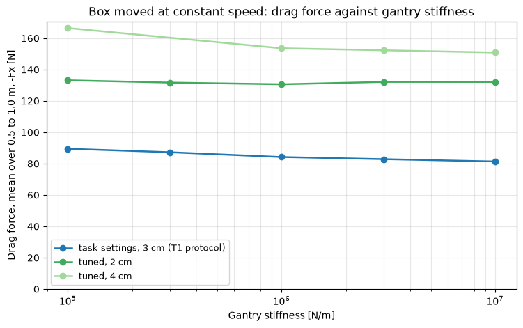
analysis/round4.py in ~/isaac/dem_compare (commit 0b91ec5). Raw data: OSMO outputs under swift://pdx.s8k.io/AUTH_team-isaac-sqa/isaac-sqa/jkamohara/t8-dem/runs/<workflow>/, workflows t8-mpm-r4-test-1, t8-mpm-r4-main-1; DEM values from t8-dem-eq-1, t8-dem-r3b-1; small files also in results/raw/. MPM code: stack archive t3-eval/bundles/8f6c08a6db49bad7 (IsaacLab a60612c79 with 69 uncommitted files, Newton e681453d with 1, Warp 3d0f4e5b). DEM-Engine: pyDEME 3.1.0. One L40S GPU per run.At 1 cm and constant speed: half the time step +4%, twice the step -4%, 1000 iterations +2%, 25 iterations -5%. One run per bar.
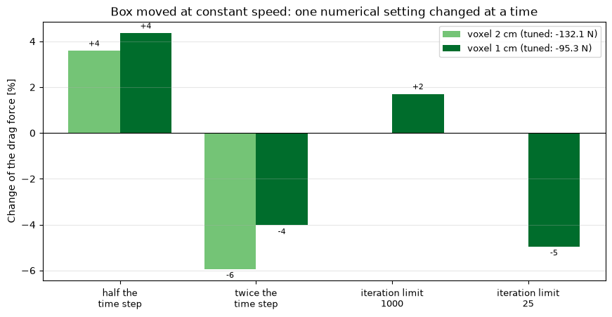
analysis/round4.py in ~/isaac/dem_compare (commit 0b91ec5). Raw data: OSMO outputs under swift://pdx.s8k.io/AUTH_team-isaac-sqa/isaac-sqa/jkamohara/t8-dem/runs/<workflow>/, workflows t8-mpm-r4-test-1, t8-mpm-r4-main-1; DEM values from t8-dem-eq-1, t8-dem-r3b-1; small files also in results/raw/. MPM code: stack archive t3-eval/bundles/8f6c08a6db49bad7 (IsaacLab a60612c79 with 69 uncommitted files, Newton e681453d with 1, Warp 3d0f4e5b). DEM-Engine: pyDEME 3.1.0. One L40S GPU per run.Tuned MPM displaces the sand differently from DEM by 27% (push), 33% (push down), 62% (push up from 6 cm) and 42% (twist) of the DEM displacement, against 15, 21, 38 and 25% between DEM seeds: above the DEM level in every motion, closest in the push.
| Motion, MPM setting | Displacement error / DEM displacement [%], MPM against DEM | DEM seed against seed | Berm or rim height error, one cell away from the box [%], MPM against DEM | DEM seed against seed | Berm or rim height error, next to the box [%], MPM against DEM | DEM seed against seed | Depth error [%] (trench; residual pit), MPM against DEM | DEM seed against seed | Map correlation outside the box, MPM against DEM | DEM seed against seed | Berm or rim height next to the box [cm], MPM | DEM |
|---|---|---|---|---|---|---|---|---|---|---|---|---|
| Horizontal push, task settings, 3 cm | 44 ± 9 | 16 ± 1 | 112 ± 5 | 5 ± 4 | 112 ± 5 | 5 ± 4 | 28 ± 8 | 5 ± 3 | 0.91 ± 0.02 | 0.98 ± 0.00 | -0.3 ± 0.1 | 2.1 ± 0.2 |
| Horizontal push, tuned, 1 cm | 27 ± 2 | 15 ± 1 | 12 ± 7 | 7 ± 7 | 12 ± 7 | 7 ± 7 | 7 ± 6 | 3 ± 3 | 0.97 ± 0.00 | 0.98 ± 0.01 | 2.2 ± 0.1 | 2.0 ± 0.2 |
| Push downward, task settings, 3 cm | 67 ± 4 | 21 ± 3 | 107 ± 4 | 12 ± 11 | 106 ± 5 | 13 ± 10 | depth is prescribed | not informative (DEM noise level) | -0.1 ± 0.0 | 0.9 ± 0.2 | ||
| Push downward, tuned, 1 cm | 33 ± 2 | 21 ± 3 | 23 ± 8 | 10 ± 8 | 20 ± 7 | 6 ± 6 | depth is prescribed | not informative (DEM noise level) | 0.7 ± 0.2 | 0.8 ± 0.2 | ||
| Push upward, task settings, 3 cm | 92 ± 4 (6 cm cases) | 37 ± 3 (6 cm cases) | 111 ± 7 | 13 ± 11 | 111 ± 9 | 14 ± 11 | 11 ± 10 | 6 ± 4 | 0.77 ± 0.11 | 0.89 ± 0.06 | -0.1 ± 0.1 | 0.7 ± 0.1 |
| Push upward, tuned, 1 cm | 62 ± 5 (6 cm cases) | 38 ± 7 (6 cm cases) | 14 ± 9 | 12 ± 7 | 13 ± 6 | 10 ± 8 | 25 ± 10 | 4 ± 2 | 0.90 ± 0.04 | 0.91 ± 0.05 | 0.7 ± 0.2 | 0.7 ± 0.2 |
| Twist, task settings, 3 cm | 69 ± 6 | 25 ± 4 | 111 ± 7 | 8 ± 7 | 104 ± 21 | 11 ± 9 | depth is prescribed | not informative (DEM noise level) | -0.1 ± 0.1 | 0.9 ± 0.2 | ||
| Twist, tuned, 1 cm | 42 ± 6 | 25 ± 3 | 14 ± 16 | 14 ± 13 | 60 ± 54 | 14 ± 16 | depth is prescribed | not informative (DEM noise level) | 1.4 ± 0.1 | 0.9 ± 0.2 |
Mean ± standard deviation over all pairs of one MPM run and one DEM seed of the cases of a motion type (9 pairs per case); "DEM seed against seed": the same measure between DEM runs that differ only in the seed (3 pairs per case), a seed-only reference that is generous to MPM by about 1.4 (it carries the grain noise twice). Corrected after checks 5 and 6: the maps leave out the cells the box covers at the end of the motion, and the push-upward displacement is given for the two 6 cm cases (from 3 cm too little sand moves to measure). Maps on 4 cm cells, displacement on 4 cm cubes. Script analysis/round5.py (fields by analysis/fields.py in OSMO workflow in t8-ana-f*)~/isaac/dem_compare (commit 0b91ec5). Raw data: OSMO outputs under swift://pdx.s8k.io/AUTH_team-isaac-sqa/isaac-sqa/jkamohara/t8-dem/runs/<workflow>/, workflows t8-mpm-r5-task-1, t8-mpm-r5-tuned-1, t8-dem-r5-d733-1, t8-dem-r5-d640-2; small files also in results/raw/. MPM code: stack archive t3-eval/bundles/8f6c08a6db49bad7 (IsaacLab a60612c79 with 69 uncommitted files, Newton e681453d with 1, Warp 3d0f4e5b). DEM-Engine: pyDEME 3.1.0. One L40S GPU per run.
Horizontal push (case P-a): tuned MPM leaves a trench of 6.0 cm with berms of 2.3 cm (DEM 6.2 and 2.1 cm); task settings dig 8.3 cm and build no berm.
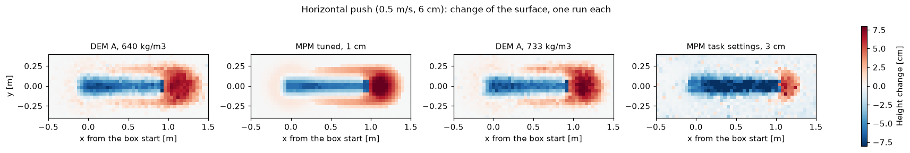
Push downward (case D-a): the depth is commanded in both, so the pit is not a result; outside the box the rim is 0.8 cm (tuned) and -0.1 cm (task) against 1.1 cm in DEM. The box cells of the MPM maps are a measuring artefact (see below).
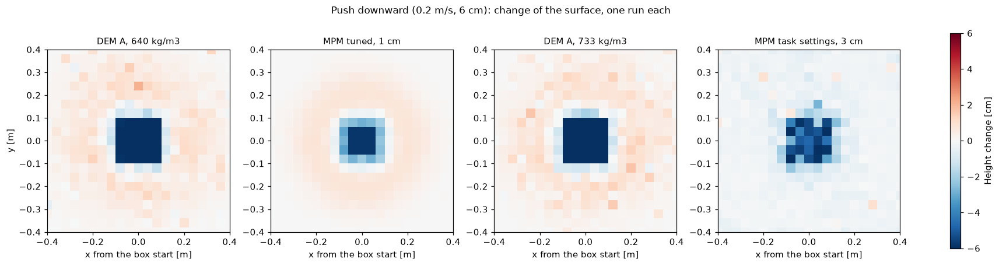
Push upward (case U-a): the pit floor is at the same depth (5.8 against 5.9 cm); the footprint mean is 3.9 against 4.6 cm, and the MPM sand moves about half as far during the lift (0.6 against 1.3 cm RMS).
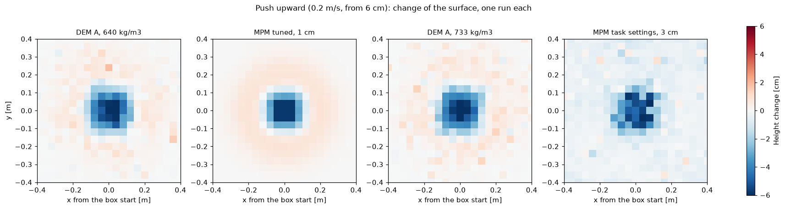
Twist (case T-a): tuned MPM piles more sand at the corners of the turning box (rim next to the box 1.25 against 1.01 cm); one cell further out the rim agrees (0.87 against 0.96 cm). The pinwheel inside the box outline is a measuring artefact.
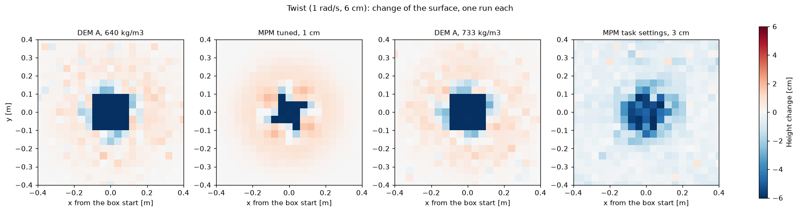
| Case, MPM setting | Runs MPM / DEM | Map correlation: MPM-DEM | DEM-DEM | MPM-MPM | Map RMS [cm]: MPM-DEM | DEM-DEM | MPM-MPM | Displacement error [cm]: MPM-DEM | DEM-DEM | MPM-MPM | Relative displacement error: MPM-DEM | DEM-DEM | MPM-MPM | Depth [cm] MPM | DEM | Rise [cm] MPM | DEM |
|---|---|---|---|---|---|---|---|---|---|---|---|---|---|---|---|---|---|
| push, 0.5 m/s, 6 cm; task settings, 3 cm | 3 / 3 | 0.92 ± 0.00 | 0.98 ± 0.00 | 0.93 ± 0.01 | 2.56 ± 0.03 | 0.78 ± 0.01 | 1.32 ± 0.08 | 6.38 ± 0.25 | 2.35 ± 0.12 | 3.98 ± 0.17 | 0.47 ± 0.02 | 0.16 ± 0.01 | 0.26 ± 0.01 | 8.3 ± 0.3 | 6.3 ± 0.3 | -0.3 ± 0.1 | 2.3 ± 0.1 |
| push, 0.25 m/s, 6 cm; task settings, 3 cm | 3 / 3 | 0.91 ± 0.00 | 0.98 ± 0.00 | 0.93 ± 0.00 | 2.84 ± 0.03 | 0.81 ± 0.01 | 1.20 ± 0.04 | 6.38 ± 0.19 | 2.30 ± 0.12 | 3.90 ± 0.08 | 0.51 ± 0.02 | 0.16 ± 0.01 | 0.29 ± 0.00 | 8.3 ± 0.1 | 6.4 ± 0.2 | -0.4 ± 0.1 | 2.2 ± 0.1 |
| push, 0.5 m/s, 3 cm; task settings, 3 cm | 3 / 3 | 0.89 ± 0.01 | 0.97 ± 0.00 | 0.84 ± 0.02 | 1.97 ± 0.05 | 0.70 ± 0.02 | 1.37 ± 0.09 | 4.19 ± 0.17 | 2.44 ± 0.04 | 3.91 ± 0.47 | 0.32 ± 0.02 | 0.16 ± 0.00 | 0.31 ± 0.03 | 5.1 ± 0.2 | 4.2 ± 0.2 | -0.1 ± 0.1 | 1.9 ± 0.0 |
| push downward, 0.2 m/s, 6 cm; task settings, 3 cm | 3 / 3 | 0.59 ± 0.14 | 0.70 ± 0.04 | 0.25 ± 0.05 | 1.43 ± 0.08 | 0.70 ± 0.04 | 1.25 ± 0.06 | 1.19 ± 0.02 | 0.33 ± 0.03 | 0.50 ± 0.02 | 0.70 ± 0.01 | 0.20 ± 0.01 | 0.26 ± 0.01 | 4.8 ± 0.4 | 6.6 ± 0.2 | -0.1 ± 0.0 | 1.1 ± 0.1 |
| push downward, 0.5 m/s, 6 cm; task settings, 3 cm | 3 / 3 | 0.43 ± 0.07 | 0.76 ± 0.01 | 0.20 ± 0.08 | 1.27 ± 0.13 | 0.74 ± 0.03 | 1.36 ± 0.04 | 1.11 ± 0.04 | 0.33 ± 0.01 | 0.51 ± 0.03 | 0.63 ± 0.02 | 0.19 ± 0.01 | 0.26 ± 0.02 | 4.9 ± 0.3 | 6.8 ± 0.2 | -0.0 ± 0.0 | 0.9 ± 0.0 |
| push downward, 0.2 m/s, 3 cm; task settings, 3 cm | 3 / 3 | 0.19 ± 0.17 | 0.69 ± 0.19 | 0.04 ± 0.08 | 1.40 ± 0.08 | 0.85 ± 0.10 | 1.49 ± 0.07 | 0.89 ± 0.04 | 0.32 ± 0.03 | 0.43 ± 0.05 | 0.68 ± 0.02 | 0.25 ± 0.02 | 0.38 ± 0.05 | 2.5 ± 0.2 | 3.8 ± 0.2 | -0.0 ± 0.1 | 0.6 ± 0.1 |
| push upward, 0.2 m/s, from 6 cm; task settings, 3 cm | 3 / 3 | 0.85 ± 0.03 | 0.93 ± 0.01 | 0.75 ± 0.04 | 1.29 ± 0.07 | 0.84 ± 0.08 | 1.34 ± 0.07 | 1.08 ± 0.05 | 0.43 ± 0.04 | 0.40 ± 0.02 | 0.91 ± 0.03 | 0.38 ± 0.03 | 0.85 ± 0.12 | 4.6 ± 0.3 | 4.6 ± 0.2 | -0.1 ± 0.1 | 0.7 ± 0.1 |
| push upward, 0.5 m/s, from 6 cm; task settings, 3 cm | 3 / 3 | 0.83 ± 0.02 | 0.94 ± 0.01 | 0.74 ± 0.03 | 1.36 ± 0.07 | 0.83 ± 0.06 | 1.54 ± 0.04 | 1.68 ± 0.14 | 0.64 ± 0.03 | 0.42 | 0.93 ± 0.04 | 0.35 ± 0.02 | 0.97 | 4.7 ± 0.3 | 5.0 ± 0.2 | -0.1 ± 0.0 | 0.9 ± 0.0 |
| push upward, 0.2 m/s, from 3 cm; task settings, 3 cm | 3 / 3 | 0.63 ± 0.06 | 0.81 ± 0.03 | 0.47 ± 0.03 | 1.30 ± 0.09 | 0.87 ± 0.07 | 1.22 ± 0.07 | 0.60 ± 0.05 | 0.42 ± 0.03 | 0.47 | 1.24 ± 0.13 | 0.91 ± 0.07 | 0.97 | 2.5 ± 0.2 | 3.3 ± 0.2 | -0.1 ± 0.1 | 0.6 ± 0.1 |
| twist, 1 rad/s, 6 cm; task settings, 3 cm | 3 / 3 | 0.58 ± 0.03 | 0.85 ± 0.02 | 0.43 ± 0.05 | 1.75 ± 0.07 | 0.78 ± 0.04 | 1.12 ± 0.13 | 1.37 ± 0.03 | 0.48 ± 0.02 | 0.84 ± 0.05 | 0.68 ± 0.02 | 0.23 ± 0.01 | 0.37 ± 0.03 | 4.6 ± 0.3 | 6.8 ± 0.1 | -0.1 ± 0.0 | 0.9 ± 0.1 |
| twist, 2 rad/s, 6 cm; task settings, 3 cm | 3 / 3 | 0.55 ± 0.07 | 0.71 ± 0.08 | 0.37 ± 0.01 | 1.79 ± 0.08 | 0.92 ± 0.12 | 1.29 ± 0.11 | 1.39 ± 0.05 | 0.50 ± 0.03 | 0.92 ± 0.05 | 0.65 ± 0.03 | 0.23 ± 0.02 | 0.36 ± 0.03 | 4.6 ± 0.2 | 6.8 ± 0.1 | -0.1 ± 0.1 | 1.1 ± 0.0 |
| twist, 1 rad/s, 3 cm; task settings, 3 cm | 3 / 3 | 0.53 ± 0.08 | 0.83 ± 0.09 | 0.31 ± 0.08 | 1.38 ± 0.05 | 0.79 ± 0.15 | 1.10 ± 0.05 | 1.06 ± 0.12 | 0.49 ± 0.05 | 0.86 ± 0.15 | 0.75 ± 0.07 | 0.30 ± 0.04 | 0.55 ± 0.03 | 2.5 ± 0.2 | 3.8 ± 0.2 | 0.1 ± 0.2 | 0.6 ± 0.1 |
| push, 0.5 m/s, 6 cm; tuned, 1 cm | 3 / 3 | 0.98 ± 0.00 | 0.98 ± 0.00 | 1.00 ± 0.00 | 0.96 ± 0.05 | 0.77 ± 0.02 | 0.23 ± 0.06 | 4.09 ± 0.24 | 2.22 ± 0.18 | 2.24 ± 0.36 | 0.26 ± 0.01 | 0.15 ± 0.01 | 0.10 ± 0.02 | 6.0 ± 0.0 | 6.2 ± 0.3 | 2.3 ± 0.0 | 2.1 ± 0.3 |
| push, 0.25 m/s, 6 cm; tuned, 1 cm | 3 / 3 | 0.98 ± 0.00 | 0.98 ± 0.00 | 1.00 ± 0.00 | 0.98 ± 0.03 | 0.75 ± 0.01 | 0.22 ± 0.05 | 4.35 ± 0.25 | 2.21 ± 0.03 | 2.23 ± 0.30 | 0.29 ± 0.02 | 0.16 ± 0.00 | 0.10 ± 0.01 | 6.1 ± 0.0 | 6.3 ± 0.1 | 2.3 ± 0.0 | 2.1 ± 0.1 |
| push, 0.5 m/s, 3 cm; tuned, 1 cm | 3 / 3 | 0.97 ± 0.00 | 0.97 ± 0.00 | 1.00 ± 0.00 | 0.94 ± 0.05 | 0.70 ± 0.03 | 0.29 ± 0.10 | 4.20 ± 0.30 | 2.42 ± 0.19 | 2.71 ± 0.04 | 0.27 ± 0.02 | 0.16 ± 0.01 | 0.12 ± 0.00 | 3.7 ± 0.3 | 4.3 ± 0.1 | 2.2 ± 0.1 | 1.9 ± 0.0 |
| push downward, 0.2 m/s, 6 cm; tuned, 1 cm | 3 / 3 | 0.87 ± 0.05 | 0.75 ± 0.01 | n/a (too few cells) | 0.82 ± 0.03 | 0.68 ± 0.02 | n/a (too few cells) | 0.56 ± 0.01 | 0.27 ± 0.01 | 0.04 ± 0.01 | 0.34 ± 0.01 | 0.17 ± 0.00 | 0.02 ± 0.00 | 3.8 ± 0.1 | 6.7 ± 0.0 | 0.8 ± 0.0 | 1.1 ± 0.0 |
| push downward, 0.5 m/s, 6 cm; tuned, 1 cm | 3 / 3 | 0.85 ± 0.05 | 0.74 ± 0.01 | n/a (too few cells) | 1.04 ± 0.01 | 0.80 ± 0.02 | n/a (too few cells) | 0.54 ± 0.03 | 0.35 ± 0.02 | 0.04 ± 0.01 | 0.31 ± 0.01 | 0.21 ± 0.01 | 0.02 ± 0.00 | 4.1 ± 0.4 | 6.6 ± 0.1 | 0.8 ± 0.0 | 0.9 ± 0.1 |
| push downward, 0.2 m/s, 3 cm; tuned, 1 cm | 3 / 3 | 0.29 ± 0.40 | 0.46 ± 0.03 | n/a (too few cells) | 1.38 ± 0.09 | 0.84 ± 0.08 | n/a (too few cells) | 0.46 ± 0.02 | 0.32 ± 0.01 | 0.04 ± 0.01 | 0.34 ± 0.01 | 0.25 ± 0.01 | 0.03 ± 0.01 | 2.1 ± 0.2 | 3.8 ± 0.1 | 0.4 ± 0.0 | 0.5 ± 0.0 |
| push upward, 0.2 m/s, from 6 cm; tuned, 1 cm | 3 / 3 | 0.92 ± 0.01 | 0.93 ± 0.02 | 0.99 ± 0.00 | 1.20 ± 0.08 | 0.81 ± 0.10 | 0.21 ± 0.05 | 0.78 ± 0.07 | 0.45 ± 0.10 | 0.47 ± 0.11 | 0.61 ± 0.05 | 0.41 ± 0.10 | 0.26 ± 0.09 | 3.9 ± 0.1 | 4.6 ± 0.1 | 0.8 ± 0.0 | 0.7 ± 0.0 |
| push upward, 0.5 m/s, from 6 cm; tuned, 1 cm | 3 / 3 | 0.92 ± 0.01 | 0.95 ± 0.00 | 1.00 ± 0.00 | 1.27 ± 0.07 | 0.78 ± 0.04 | 0.19 ± 0.04 | 1.32 ± 0.10 | 0.67 ± 0.04 | 0.44 ± 0.06 | 0.64 ± 0.04 | 0.35 ± 0.02 | 0.30 ± 0.09 | 3.9 ± 0.1 | 4.8 ± 0.1 | 0.8 ± 0.0 | 0.9 ± 0.1 |
| push upward, 0.2 m/s, from 3 cm; tuned, 1 cm | 3 / 3 | 0.85 ± 0.03 | 0.84 ± 0.03 | 0.95 ± 0.01 | 1.40 ± 0.08 | 0.81 ± 0.08 | 0.22 ± 0.02 | 0.63 ± 0.02 | 0.45 ± 0.01 | n/a (too few cells) | 0.93 ± 0.03 | 0.98 ± 0.02 | n/a (too few cells) | 2.0 ± 0.1 | 3.3 ± 0.1 | 0.4 ± 0.0 | 0.5 ± 0.0 |
| twist, 1 rad/s, 6 cm; tuned, 1 cm | 3 / 3 | 0.68 ± 0.03 | 0.78 ± 0.07 | 0.99 ± 0.01 | 1.21 ± 0.03 | 0.87 ± 0.09 | 0.21 ± 0.05 | 0.84 ± 0.05 | 0.46 ± 0.02 | 0.10 ± 0.01 | 0.38 ± 0.02 | 0.21 ± 0.01 | 0.04 ± 0.00 | 2.9 ± 0.0 | 6.7 ± 0.1 | 1.2 ± 0.0 | 1.0 ± 0.0 |
| twist, 2 rad/s, 6 cm; tuned, 1 cm | 3 / 3 | 0.57 ± 0.06 | 0.79 ± 0.05 | 0.97 ± 0.01 | 1.33 ± 0.08 | 0.81 ± 0.08 | 0.25 ± 0.04 | 0.88 ± 0.03 | 0.52 ± 0.02 | 0.11 ± 0.01 | 0.39 ± 0.01 | 0.24 ± 0.02 | 0.04 ± 0.00 | 2.9 ± 0.0 | 6.8 ± 0.0 | 1.3 ± 0.0 | 1.0 ± 0.1 |
| twist, 1 rad/s, 3 cm; tuned, 1 cm | 3 / 3 | 0.70 ± 0.11 | 0.86 ± 0.03 | 0.80 ± 0.05 | 1.63 ± 0.14 | 0.84 ± 0.10 | 0.25 ± 0.03 | 0.83 ± 0.08 | 0.46 ± 0.02 | 0.11 ± 0.01 | 0.50 ± 0.04 | 0.29 ± 0.01 | 0.05 ± 0.01 | 1.2 ± 0.0 | 3.9 ± 0.1 | 1.5 ± 0.0 | 0.7 ± 0.2 |
| Case, MPM setting | Quantity | MPM (mean ± sd over 3 beds) | DEM (mean ± sd over 3 seeds) | MPM / DEM |
|---|---|---|---|---|
| push, 0.5 m/s, 6 cm; task settings, 3 cm | push force Fx, mean over 0.5 to 1.0 m [N] | -88.0 ± 4.0 | -79.4 ± 1.0 | 1.11 |
| push, 0.5 m/s, 6 cm; task settings, 3 cm | vertical force during the push [N] | 12.6 ± 1.9 | 18.2 ± 1.9 | 0.69 |
| push, 0.5 m/s, 6 cm; task settings, 3 cm | Fz at the end of the hold [N] | 273.8 ± 57.3 | 273.5 ± 31.5 | 1.00 |
| push, 0.5 m/s, 6 cm; task settings, 3 cm | box above its commanded depth at the end of the hold [mm] | 0.1 ± 0.0 | 0.0 ± 0.0 | |
| push, 0.25 m/s, 6 cm; task settings, 3 cm | push force Fx, mean over 0.5 to 1.0 m [N] | -78.6 ± 4.1 | -75.7 ± 0.3 | 1.04 |
| push, 0.25 m/s, 6 cm; task settings, 3 cm | vertical force during the push [N] | 8.8 ± 3.0 | 18.6 ± 1.5 | 0.47 |
| push, 0.25 m/s, 6 cm; task settings, 3 cm | Fz at the end of the hold [N] | 270.1 ± 61.8 | 281.7 ± 76.6 | 0.96 |
| push, 0.25 m/s, 6 cm; task settings, 3 cm | box above its commanded depth at the end of the hold [mm] | 0.1 ± 0.0 | 0.0 ± 0.0 | |
| push, 0.5 m/s, 3 cm; task settings, 3 cm | push force Fx, mean over 0.5 to 1.0 m [N] | -43.9 ± 2.7 | -40.1 ± 0.3 | 1.09 |
| push, 0.5 m/s, 3 cm; task settings, 3 cm | vertical force during the push [N] | 9.8 ± 2.4 | 13.9 ± 0.3 | 0.70 |
| push, 0.5 m/s, 3 cm; task settings, 3 cm | Fz at the end of the hold [N] | 94.9 ± 24.1 | 0.7 ± 0.0 | |
| push, 0.5 m/s, 3 cm; task settings, 3 cm | box above its commanded depth at the end of the hold [mm] | -0.0 ± 0.0 | 0.0 ± 0.0 | |
| push downward, 0.2 m/s, 6 cm; task settings, 3 cm | peak Fz while pressing [N] | 460.8 ± 33.3 | 1062.4 ± 63.8 | 0.43 |
| push downward, 0.2 m/s, 6 cm; task settings, 3 cm | Fz at the end of the hold [N] | 246.3 ± 43.7 | 306.1 ± 89.7 | 0.80 |
| push downward, 0.2 m/s, 6 cm; task settings, 3 cm | box above its commanded depth at the end of the hold [mm] | 0.1 ± 0.0 | 0.0 ± 0.0 | |
| push downward, 0.5 m/s, 6 cm; task settings, 3 cm | peak Fz while pressing [N] | 454.1 ± 22.9 | 1125.3 ± 79.8 | 0.40 |
| push downward, 0.5 m/s, 6 cm; task settings, 3 cm | Fz at the end of the hold [N] | 226.0 ± 41.9 | 2.7 ± 0.8 | 83.98 |
| push downward, 0.5 m/s, 6 cm; task settings, 3 cm | box above its commanded depth at the end of the hold [mm] | 0.0 ± 0.0 | 0.0 ± 0.0 | |
| push downward, 0.2 m/s, 3 cm; task settings, 3 cm | peak Fz while pressing [N] | 229.6 ± 27.6 | 721.5 ± 12.5 | 0.32 |
| push downward, 0.2 m/s, 3 cm; task settings, 3 cm | Fz at the end of the hold [N] | 90.6 ± 17.9 | 0.7 ± 0.2 | |
| push downward, 0.2 m/s, 3 cm; task settings, 3 cm | box above its commanded depth at the end of the hold [mm] | -0.0 ± 0.0 | 0.0 ± 0.0 | |
| push upward, 0.2 m/s, from 6 cm; task settings, 3 cm | lowest Fz while lifting [N] | -0.6 ± 0.2 | -4.4 ± 0.6 | |
| push upward, 0.2 m/s, from 6 cm; task settings, 3 cm | mean Fz over the first cm of the lift [N] | 26.5 ± 7.9 | 6.4 ± 6.6 | |
| push upward, 0.5 m/s, from 6 cm; task settings, 3 cm | lowest Fz while lifting [N] | -0.7 ± 0.3 | -5.3 ± 1.1 | |
| push upward, 0.5 m/s, from 6 cm; task settings, 3 cm | mean Fz over the first cm of the lift [N] | 17.3 ± 6.4 | -5.3 ± 1.1 | |
| push upward, 0.2 m/s, from 3 cm; task settings, 3 cm | lowest Fz while lifting [N] | -0.0 ± 0.0 | -1.0 ± 0.1 | |
| push upward, 0.2 m/s, from 3 cm; task settings, 3 cm | mean Fz over the first cm of the lift [N] | 4.8 ± 2.0 | -0.8 ± 0.1 | |
| twist, 1 rad/s, 6 cm; task settings, 3 cm | Fz at the end of the hold [N] | 248.8 ± 38.0 | 270.4 ± 86.0 | 0.92 |
| twist, 1 rad/s, 6 cm; task settings, 3 cm | box above its commanded depth at the end of the hold [mm] | 0.0 ± 0.0 | 0.0 ± 0.0 | |
| twist, 1 rad/s, 6 cm; task settings, 3 cm | torque about z during the turn, as output by each simulator [N m] | -3.3 ± 0.0 | -5.1 ± 0.2 | |
| twist, 2 rad/s, 6 cm; task settings, 3 cm | Fz at the end of the hold [N] | 244.7 ± 39.4 | 273.2 ± 54.1 | 0.90 |
| twist, 2 rad/s, 6 cm; task settings, 3 cm | box above its commanded depth at the end of the hold [mm] | 0.0 ± 0.0 | 0.0 ± 0.0 | |
| twist, 2 rad/s, 6 cm; task settings, 3 cm | torque about z during the turn, as output by each simulator [N m] | -3.8 ± 0.1 | -5.3 ± 0.3 | |
| twist, 1 rad/s, 3 cm; task settings, 3 cm | Fz at the end of the hold [N] | 87.5 ± 10.3 | 0.7 ± 0.2 | |
| twist, 1 rad/s, 3 cm; task settings, 3 cm | box above its commanded depth at the end of the hold [mm] | -0.0 ± 0.0 | 0.0 ± 0.0 | |
| twist, 1 rad/s, 3 cm; task settings, 3 cm | torque about z during the turn, as output by each simulator [N m] | -1.3 ± 0.0 | -1.5 ± 0.2 | |
| push, 0.5 m/s, 6 cm; tuned, 1 cm | push force Fx, mean over 0.5 to 1.0 m [N] | -96.6 ± 5.6 | -70.7 ± 0.2 | 1.37 |
| push, 0.5 m/s, 6 cm; tuned, 1 cm | vertical force during the push [N] | 23.6 ± 3.8 | 17.0 ± 0.3 | 1.39 |
| push, 0.5 m/s, 6 cm; tuned, 1 cm | Fz at the end of the hold [N] | 2128.5 ± 98.1 | 357.3 ± 50.5 | 5.96 |
| push, 0.5 m/s, 6 cm; tuned, 1 cm | box above its commanded depth at the end of the hold [mm] | 0.7 ± 0.0 | 0.0 ± 0.0 | |
| push, 0.25 m/s, 6 cm; tuned, 1 cm | push force Fx, mean over 0.5 to 1.0 m [N] | -93.8 ± 5.7 | -66.1 ± 1.1 | 1.42 |
| push, 0.25 m/s, 6 cm; tuned, 1 cm | vertical force during the push [N] | 22.1 ± 3.7 | 16.0 ± 0.9 | 1.38 |
| push, 0.25 m/s, 6 cm; tuned, 1 cm | Fz at the end of the hold [N] | 2134.5 ± 90.7 | 328.2 ± 54.9 | 6.50 |
| push, 0.25 m/s, 6 cm; tuned, 1 cm | box above its commanded depth at the end of the hold [mm] | 0.7 ± 0.0 | 0.0 ± 0.0 | |
| push, 0.5 m/s, 3 cm; tuned, 1 cm | push force Fx, mean over 0.5 to 1.0 m [N] | -46.3 ± 3.7 | -35.2 ± 0.3 | 1.32 |
| push, 0.5 m/s, 3 cm; tuned, 1 cm | vertical force during the push [N] | 15.2 ± 2.4 | 12.5 ± 0.1 | 1.21 |
| push, 0.5 m/s, 3 cm; tuned, 1 cm | Fz at the end of the hold [N] | 1417.4 ± 41.9 | 0.5 ± 0.3 | |
| push, 0.5 m/s, 3 cm; tuned, 1 cm | box above its commanded depth at the end of the hold [mm] | 0.4 ± 0.0 | 0.0 ± 0.0 | |
| push downward, 0.2 m/s, 6 cm; tuned, 1 cm | peak Fz while pressing [N] | 2089.5 ± 16.3 | 921.6 ± 21.2 | 2.27 |
| push downward, 0.2 m/s, 6 cm; tuned, 1 cm | Fz at the end of the hold [N] | 2032.1 ± 154.8 | 330.7 ± 76.0 | 6.15 |
| push downward, 0.2 m/s, 6 cm; tuned, 1 cm | box above its commanded depth at the end of the hold [mm] | 0.6 ± 0.1 | 0.0 ± 0.0 | |
| push downward, 0.5 m/s, 6 cm; tuned, 1 cm | peak Fz while pressing [N] | 1838.4 ± 28.9 | 896.2 ± 52.7 | 2.05 |
| push downward, 0.5 m/s, 6 cm; tuned, 1 cm | Fz at the end of the hold [N] | 2030.7 ± 176.0 | 9.9 ± 3.7 | 205.11 |
| push downward, 0.5 m/s, 6 cm; tuned, 1 cm | box above its commanded depth at the end of the hold [mm] | 0.6 ± 0.1 | 0.0 ± 0.0 | |
| push downward, 0.2 m/s, 3 cm; tuned, 1 cm | peak Fz while pressing [N] | 1335.3 ± 14.7 | 651.1 ± 11.8 | 2.05 |
| push downward, 0.2 m/s, 3 cm; tuned, 1 cm | Fz at the end of the hold [N] | 1394.4 ± 38.6 | 0.5 ± 0.2 | |
| push downward, 0.2 m/s, 3 cm; tuned, 1 cm | box above its commanded depth at the end of the hold [mm] | 0.4 ± 0.0 | 0.0 ± 0.0 | |
| push upward, 0.2 m/s, from 6 cm; tuned, 1 cm | lowest Fz while lifting [N] | -1.0 ± 0.1 | -3.7 ± 0.4 | |
| push upward, 0.2 m/s, from 6 cm; tuned, 1 cm | mean Fz over the first cm of the lift [N] | 226.8 ± 27.7 | 11.6 ± 7.1 | |
| push upward, 0.5 m/s, from 6 cm; tuned, 1 cm | lowest Fz while lifting [N] | -1.4 ± 0.1 | -4.7 ± 0.5 | |
| push upward, 0.5 m/s, from 6 cm; tuned, 1 cm | mean Fz over the first cm of the lift [N] | 231.5 ± 34.5 | -4.7 ± 0.5 | |
| push upward, 0.2 m/s, from 3 cm; tuned, 1 cm | lowest Fz while lifting [N] | -0.1 ± 0.0 | -0.9 ± 0.1 | |
| push upward, 0.2 m/s, from 3 cm; tuned, 1 cm | mean Fz over the first cm of the lift [N] | 126.4 ± 5.0 | -0.7 ± 0.1 | |
| twist, 1 rad/s, 6 cm; tuned, 1 cm | Fz at the end of the hold [N] | 1971.8 ± 277.8 | 301.4 ± 54.8 | 6.54 |
| twist, 1 rad/s, 6 cm; tuned, 1 cm | box above its commanded depth at the end of the hold [mm] | 0.6 ± 0.1 | 0.0 ± 0.0 | |
| twist, 1 rad/s, 6 cm; tuned, 1 cm | torque about z during the turn, as output by each simulator [N m] | -5.9 ± 0.4 | -4.6 ± 0.1 | |
| twist, 2 rad/s, 6 cm; tuned, 1 cm | Fz at the end of the hold [N] | 2034.9 ± 183.8 | 250.5 ± 13.8 | 8.12 |
| twist, 2 rad/s, 6 cm; tuned, 1 cm | box above its commanded depth at the end of the hold [mm] | 0.6 ± 0.1 | 0.0 ± 0.0 | |
| twist, 2 rad/s, 6 cm; tuned, 1 cm | torque about z during the turn, as output by each simulator [N m] | -6.5 ± 0.4 | -4.4 ± 0.2 | |
| twist, 1 rad/s, 3 cm; tuned, 1 cm | Fz at the end of the hold [N] | 1387.2 ± 35.4 | 0.5 ± 0.3 | |
| twist, 1 rad/s, 3 cm; tuned, 1 cm | box above its commanded depth at the end of the hold [mm] | 0.4 ± 0.0 | 0.0 ± 0.0 | |
| twist, 1 rad/s, 3 cm; tuned, 1 cm | torque about z during the turn, as output by each simulator [N m] | -2.2 ± 0.1 | -1.5 ± 0.1 |
MPM forces in this section were recorded at one phase of a 20 ms cycle of the box speed and are superseded by P6. DEM forces, deformation, sand motion, density and the tilt test are not affected.
Superseded by P6 (MPM force recorded at one phase): Round 2, T1 gantry, task sampling: the MPM force falls from -68 N at a 4 cm voxel to -34 N at 1 cm (factor 2.0; one run per point).
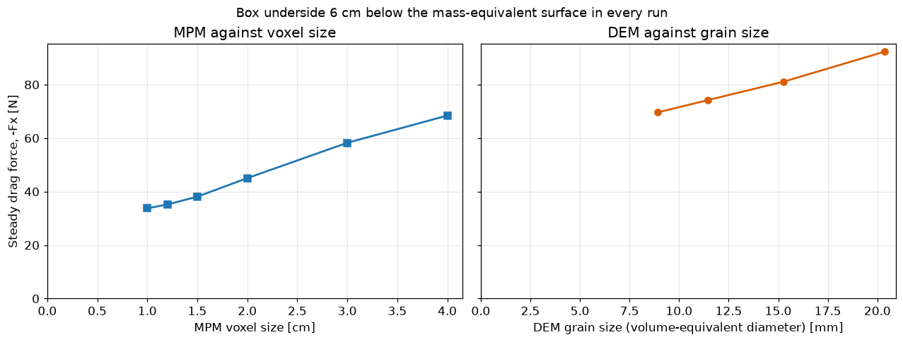
analysis/resolution.py in ~/isaac/dem_compare (commit 0b91ec5). Raw data: OSMO outputs under swift://pdx.s8k.io/AUTH_team-isaac-sqa/isaac-sqa/jkamohara/t8-dem/runs/<workflow>/, workflows t8-mpm-eq-1, t8-dem-eq-1; small files also in results/raw/. MPM code: stack archive t3-eval/bundles/8f6c08a6db49bad7 (IsaacLab a60612c79 with 69 uncommitted files, Newton e681453d with 1, Warp 3d0f4e5b). DEM-Engine: pyDEME 3.1.0. One L40S GPU per run.Superseded by P6 (MPM force recorded at one phase): Round 2, T1 gantry: more particles per cell raised the force on the soft gantry, but not on a stiff one, where 8 particles per cell give -84 to -45 N at 4 to 1 cm (P5); these forces are withdrawn.
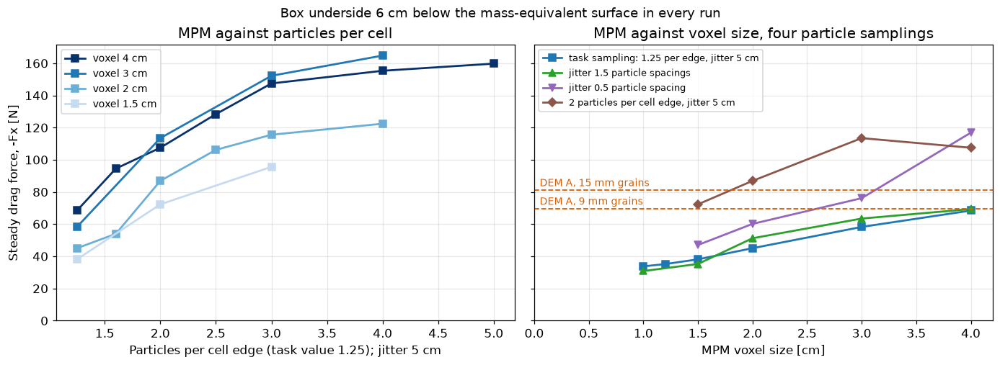
analysis/resolution.py in ~/isaac/dem_compare (commit 0b91ec5). Raw data: OSMO outputs under swift://pdx.s8k.io/AUTH_team-isaac-sqa/isaac-sqa/jkamohara/t8-dem/runs/<workflow>/, workflows t8-mpm-eq-1, t8-mpm-cause-1, t8-mpm-sampling-1, t8-dem-eq-1; small files also in results/raw/. MPM code: stack archive t3-eval/bundles/8f6c08a6db49bad7 (IsaacLab a60612c79 with 69 uncommitted files, Newton e681453d with 1, Warp 3d0f4e5b). DEM-Engine: pyDEME 3.1.0. One L40S GPU per run.Superseded by P6 (MPM force recorded at one phase): Round 2, T1 gantry: one setting changed at a time. The particle-sampling bars are withdrawn (they do not survive a stiff gantry, P5); one run per bar.
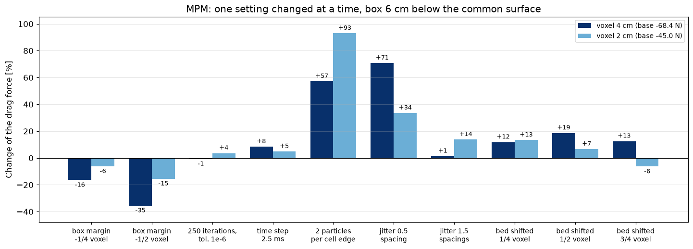
analysis/resolution.py in ~/isaac/dem_compare (commit 0b91ec5). Raw data: OSMO outputs under swift://pdx.s8k.io/AUTH_team-isaac-sqa/isaac-sqa/jkamohara/t8-dem/runs/<workflow>/, workflows t8-mpm-eq-1, t8-mpm-cause-1; small files also in results/raw/. MPM code: stack archive t3-eval/bundles/8f6c08a6db49bad7 (IsaacLab a60612c79 with 69 uncommitted files, Newton e681453d with 1, Warp 3d0f4e5b). DEM-Engine: pyDEME 3.1.0. One L40S GPU per run.MPM forces in this section were recorded at one phase of a 20 ms cycle of the box speed and are superseded by P6. DEM forces, deformation, sand motion, density and the tilt test are not affected.
Repeats and bed length change the force by a few percent; the DEM material and the MPM sampling change it by tens of percent.
| Run | Fx [N] | Fz [N] | Underside below the surface [cm] | Density under the surface [kg/m3] | Particles / grains |
|---|---|---|---|---|---|
| MPM eq voxel 4 cm, depth 6 cm | -68.4 | 10.2 | 6.20 | 696 | 22,800 |
| MPM eq voxel 3 cm, depth 6 cm | -58.2 | 6.1 | 6.13 | 731 | 55,000 |
| MPM eq voxel 2 cm, depth 6 cm | -45.0 | -0.3 | 6.07 | 753 | 180,000 |
| MPM eq voxel 1.5 cm, depth 6 cm | -38.1 | -3.3 | 6.11 | 758 | 420,000 |
| MPM eq voxel 1.2 cm, depth 6 cm | -35.1 | -1.7 | 6.08 | 754 | 843,750 |
| MPM eq voxel 1 cm, depth 6 cm | -33.7 | -4.3 | 6.10 | 775 | 1,440,000 |
| MPM eq voxel 3 cm, repeat of the same bed | -59.0 | 7.7 | 6.12 | 731 | 55,000 |
| MPM eq voxel 3 cm, jitter seed 1 | -61.3 | 8.6 | 6.10 | 722 | 55,000 |
| MPM eq voxel 3 cm, jitter seed 2 | -59.4 | 5.3 | 6.11 | 729 | 55,000 |
| MPM eq voxel 3 cm, jitter seed 3 | -58.8 | 6.5 | 6.11 | 730 | 55,000 |
| MPM eq voxel 3 cm, bed 3.4 m, drag 2.4 m | -61.0 (after 1.4 m: -60.7) | 8.2 | 6.16 | 722 | 78,100 |
| DEM eq A, grain 20 mm | -92.3 | 22.9 | 6.00 | 734 | 84,672 |
| DEM eq A, grain 15 mm | -81.1 | 14.8 | 6.04 | 733 | 200,704 |
| DEM eq A, grain 11 mm | -74.2 | 13.2 | 6.00 | 736 | 477,300 |
| DEM eq A, grain 9 mm | -69.6 | 12.7 | 6.00 | 736 | 1,019,040 |
| DEM eq A, 15 mm, seed 43 | -81.5 | 17.1 | 6.00 | 735 | 200,704 |
| DEM eq A, 15 mm, seed 44 | -81.3 | 18.7 | 5.99 | 735 | 200,704 |
| DEM eq A, 15 mm, bed 3.4 m, drag 2.4 m | -82.7 (after 1.4 m: -86.4) | 18.4 | 6.02 | 734 | 284,928 |
| DEM eq B, 15 mm | -112.5 | 30.1 | 5.98 | 736 | 145,452 |
| DEM eq S (spheres), 12 mm | -50.9 | 12.7 | 6.00 | 738 | 395,136 |
Side view of the sand within 3 cm of the centre plane, coloured by speed, MPM (top) and DEM (bottom), box underside 6 cm below the common surface. Real time. Made by analysis/video.py from workflows t8-mpm-video-1 and t8-dem-video-1; original file ~/isaac/dem_compare/results/drag_side_by_side.mp4.
checks/T8.md| Issue | State | What was done |
|---|---|---|
| 1. Depth not equal | closed | One surface rule in both simulators (mass-equivalent surface, same code); all runs redone at 6 cm below it. Measured: 6.13 cm (MPM) and 6.04 cm (DEM), 44.0 and 44.3 kg/m2 above the underside. Ratio DEM / MPM 1.37 (15 mm) and 1.17 (9 mm). depth.png redrawn. |
| 2. MPM bed not flat, berm and sinking wrong | partly closed | Deformation is now per cell against the run's own map before lowering. MPM: no berm (-0.2 cm), bed 0.4 cm lower far from the trench, trench 8.0 cm; DEM: berm 2.6 cm, trench 6.0 cm. Why the MPM bed slopes down at its walls is open: walls 0.5 m high instead of 0.2 m leave the slope (1.4 and 1.2 cm) and the force (-58.2 and -59.1 N) nearly unchanged; MPM particles sit up to 1.3 cm beyond the wall faces. |
| 3. MPM seeds are the same bed | closed | The driver now sets the spawner's jitter seed. Four different beds: -58.2 to -61.3 N; the same bed twice: -58.2 and -59.0 N. |
| 4. Resolution dependence and its cause | partly closed | Voxel series at equal depth: -68 / -58 / -45 / -38 / -35 / -34 N at 4 / 3 / 2 / 1.5 / 1.2 / 1 cm. Six candidate causes tested one at a time at 4 and 2 cm; of these, particle sampling changes the force most (2.3 to 2.8 times, single runs), but the voxel dependence remains at every sampling (factor 1.5 to 1.8 from 4 to 1.5 cm) and its cause is not identified. Open: no converged value; no solver convergence record; shifts tested in z only; one run per setting. Round 3 supersedes the particle-sampling part: those forces do not survive a stiff gantry (P5); the cause of the gantry effect is not identified. |
| 5. Smaller points | closed | Thickness by one rule (0.217 and 0.218 m); tilt angle for four thresholds; pressing force and rising DEM force stated, with a 2.4 m drag in both; sentence on the failed 1.5 cm tilt run corrected. |
| 6. Provenance | partly closed | Small result files of every run are tracked in results/raw/; results/storage_manifest.txt lists the stored copies found for every workflow. Code version per MPM run listed next to T1's. Open: the repository still has no remote; the 69 uncommitted files of the MPM archive are not identified. |
| 7. Video | closed | site/T8/media/drag_side_by_side.mp4 (2.8 s, real time, 71 frames): sand near the centre plane coloured by speed, MPM above DEM, from two extra runs with a particle dump every 2 cm of drag. |
Every MPM box force of rounds 1 to 3 was recorded at one phase of a 20 ms cycle of the box speed and is kept only for the record: the task-setting forces (-59.4 and -34 N), the tuned series (-84 to -45 N), the depth, sampling and one-setting series, and the ratios DEM / MPM 1.37, 2.3 and 1.58. The gantry dependence reported in round 3 was this artefact. T1's box forces are affected in the same way.